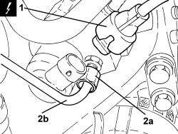
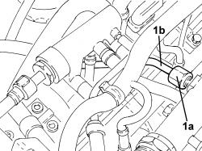

1060F20 PIPE FROM PRESSURE PUMP TO FUEL MANIFOLD - R.R.
- Path
- Procedures > 10 ENGINE > 1060 DIESEL INJECTION SYSTEM > 1060F INJECTORS AND PIPES > 1060F20 PIPE FROM PRESSURE PUMP TO FUEL MANIFOLD - R.R.
- Kind
- repair procedure (removal / refitting; the operation number is the code)
- Applies to
- engines: 2.4 JTD 20v; all production periods
- Interactive page
- https://sloeber94.github.io/elrnDB-aBrrSpdr/en/#/946002987
Applies to: engines: 2.4 JTD 20v; all production periods
 Removing
Removing
 Refitting
RefittingOp. 1016A10 SOUND-PROOFING COVER - R.R
1. Disconnect the electrical connection from the fuel pressure regulator on the pressure pump.
Description | Connector | |
|---|---|---|
1 | Fuel pressure regulator |
2. Undo the connector (2a) and disconnect the pipe from the pressure pump to the fuel manifold (2b), pressure pump side.

Applies to: engines: 2.4 JTD 20v; all production periods
1. Undo the connector (1a) and disconnect the pipe from the pressure pump to the fuel manifold (2b), fuel pump side, and remove.

Applies to: engines: 2.4 JTD 20v; all production periods
Refitting
Removing- Place the pipe from the pressure pump to the fuel manifold back in its housing and secure it tightening the connectors to the recommended torque.
Component | Fastening | dia | Value (daNm) | Validity |
|---|---|---|---|---|
Pipe from pressure pump to fuel manifold - pressure pump side | Connector | M12 | 2.2 ÷ 2.4 | 2.4 JTD 20V |
Component | Fastening | dia | Value (daNm) | Validity |
|---|---|---|---|---|
Pipe from pressure pump to fuel manifold - fuel manifold side | Connector | M14 | 2.2 ÷ 2.4 | 2.4 JTD 20V |
- Connect the electrical connection to the fuel pressure regulator on the pressure pump.